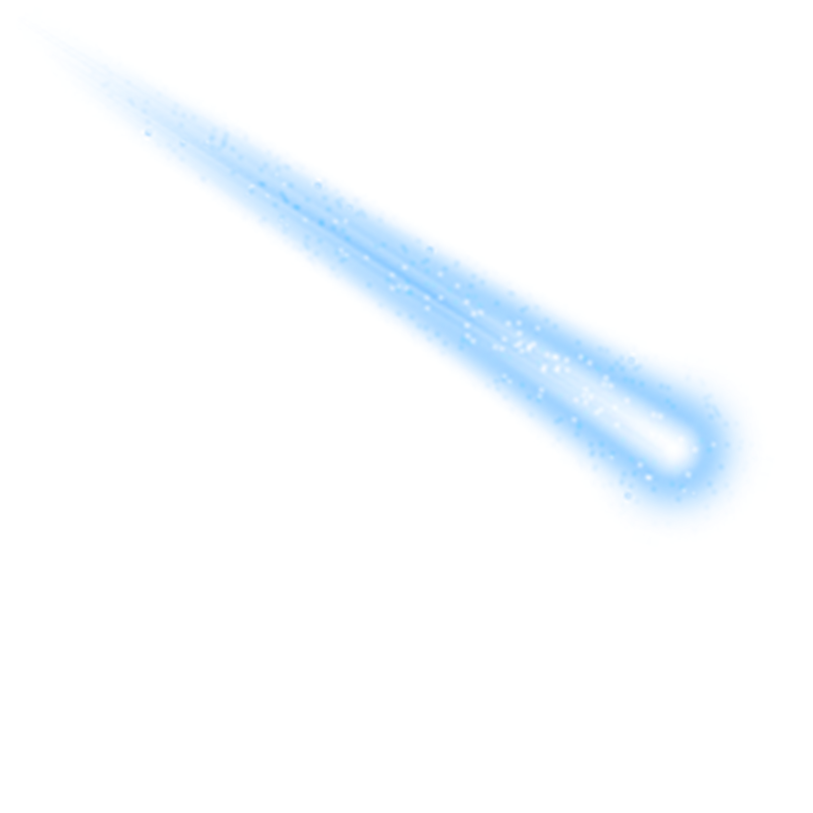

Tacchi Antonin
Dévelloppeur web, Designer
A propos de moi:
Bonjour à tous,
Je m'appelle Antonin, et je suis développeur web. Passionné par les technologies numériques et le monde du développement, je me spécialise dans la création de sites web modernes, interactifs et performants.
Je vis en France, un pays riche en histoire et en innovation, ce qui m'inspire au quotidien dans mon métier. Toujours à la recherche de nouveaux défis, je suis curieux d'apprendre les dernières tendances technologiques, que ce soit dans le domaine du front-end, du back-end ou des solutions complètes.
Au-delà de ma passion pour le code, j'aime aussi explorer d'autres univers : je suis un grand amateur de design graphique, de photographie et de jeux vidéo. Ces intérêts m'aident à cultiver une approche créative dans mes projets professionnels.
Vous pouvez me retrouver sur mes réseaux ou via mon portfolio, où je partage mes réalisations et mes projets en cours. N'hésitez pas à me contacter si vous voulez collaborer ou simplement échanger des idées.
Portfolio:
Fans-site sur Nekfeu

Durant ce projet j'ai créer une page réalisation avec ses albums. La présentation de ses albums
est faites avec ses sons qui apparaissent quand on passe la sourit sur l'album, deplus
quand on clique dessus cela nous redirige vers la page de l'album sur spotify.
Pour cette page la, j'ai fais une sorte de menu déroulant qui montre les albums de nekfeu quand on passe
la souris de par dessus, et quand on clique dessus cela nous redirige vers la page spotify de l'album en en question.

